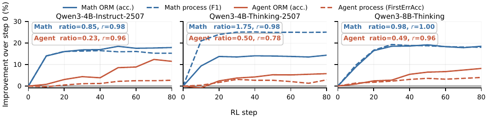
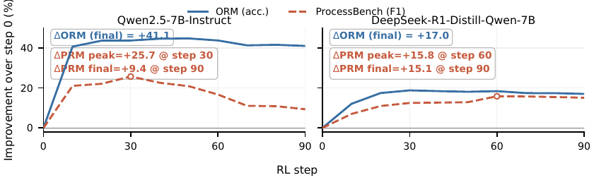
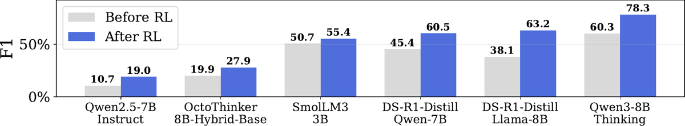

On prompte un LLM pour qu'il juge une trajectoire en émettant un CoT, puis des labels par step Ŷ_t ∈ {0,1}, puis un label d'outcome D̂ ; on le récompense par GRPO uniquement sur 1[D̂ = D], et l'avantage scalaire de groupe est appliqué uniformément à tous les tokens de la réponse, labels de step compris [§3.2, App. C] ; à l'inférence on lit les Ŷ_t comme un PRM.
Claim principal, précisément : avec 3 200 trajectoires outcome-labelées tirées de SCAN-Pro [App. E], TIPS-Qwen3-4B-Thinking-2507 atteint 85,2 F1 moyen sur ProcessBench, au-dessus de tous les PRMs entraînés évalués (Qwen2.5-Math-PRM-72B 78,3 ; GenPRM-32B 77,6) et des juges prompt-only GPT-5.4-Instruct (79,4) et Claude-4.7-Opus (79,3), en dessous de o1-mini (87,9) [Tab. 1].
Pourquoi ce papier compte pour ce corpus : c'est la thèse « supervision de process sans annotation de process » sous sa forme la plus pure — reward d'outcome binaire, zéro rollout Monte-Carlo, zéro label humain par step. Si elle tient, le vérifieur de process devient l'ingrédient le moins cher à construire.
⚠️ Mais le cadrage de la mission doit être corrigé d'emblée, et c'est le fait le plus important du mémo : TIPS ne fait aucune attribution de crédit par step. L'avantage est un scalaire par rollout, identique sur chaque token [App. C]. Le « process » est dans la forme de la sortie, pas dans la structure de l'avantage. Ce papier ne produit pas un signal de crédit pour un run de policy : il fabrique un juge. Donc « sans juge » est faux comme énoncé — TIPS est le juge ; ce qui est supprimé, c'est l'annotation et le Monte-Carlo, pas le juge. Et le papier n'entraîne jamais une policy avec ce PRM : la boucle n'est pas fermée.
Origine — deux corpus, tous deux dérivés de datasets publics, aucune annotation humaine produite par les auteurs :
| Domaine | Train | Volume | Source |
|---|---|---|---|
| Math | échantillon de SCAN-Pro (huggingface.co/datasets/dyyyyyyyy/SCAN-Pro, construit depuis le training set de MATH) |
3 200 trajectoires | [App. E] |
| Agent | corpus construit depuis HotpotQA, GAIA, τ²-Bench, BFCL | 2 905 trajectoires | [App. E] |
⚠️ Le « 3.2K » de l'abstract est le corpus math uniquement. Le run agent utilise 2 905 trajectoires, chiffre qui n'apparaît ni dans l'abstract ni dans l'intro.
Pipeline — non décrit étape par étape. On sait seulement : les traces math sont découpées en paragraphes indexés depuis 0 et le prompt reçoit un TAGGED_RESPONSE [App. F] ; les trajectoires d'agent sont converties en données RL outcome-supervisées (script prepare_agent_process_judge_data.py dans le dépôt). Comment les labels d'outcome D sont obtenus pour le domaine agent : non précisé dans le papier.
Distribution de difficulté — non précisé. Aucune stratification, aucun histogramme, aucune statistique de longueur des trajectoires jugées (seule la longueur de la réponse du juge est donnée : 1 828,7 tokens en moyenne [Tab. 4]).
Filtrage — aucun côté tâches. Pas de filtrage pass@k, pas de seuil de difficulté, pas d'exclusion des groupes all-correct / all-zero (qui donnent  = 0 sous GRPO non normalisé et ne contribuent rien). ⚠️ Avec G = 8 et un backbone déjà à 63,8 F1 de base, une fraction non chiffrée du budget de rollouts est dépensée sur des groupes à avantage nul — le papier ne la mesure pas.
Curriculum — aucun.
Contamination et séparation train/test — asymétrique, et c'est le point faible :
- Agent : décontamination explicite — exclusion des trajectoires dont la similarité Jaccard 5-gram du task-prompt avec AgentProcessBench dépasse 0,8 [App. E]. ⚠️ Seuil très permissif, calculé sur le prompt de tâche seul (pas sur la trajectoire), et le corpus de train est tiré des quatre mêmes sources que le benchmark d'éval.
- Math : aucune procédure de décontamination énoncée. Train = MATH train set via SCAN-Pro, éval = ProcessBench dont deux sous-ensembles sont GSM8K et MATH. La disjonction est plausible (train vs test de MATH) mais n'est jamais affirmée ni vérifiée par les auteurs.
- ⚠️ Et le plus gênant, trouvé dans le code publié, pas dans le papier : le script de training passe data.val_files=processbench_eval.parquet avec trainer.test_freq=10 — ProcessBench est le set de validation pendant l'entraînement. Le benchmark qui porte le chiffre de tête sert aussi à suivre les checkpoints. Ça rend l'heuristique d'early-stopping « process-label-free » (§4.4) difficile à prendre au mot.
Données SFT/IFT avant RL — aucune. RL directement depuis les checkpoints publiés.
Coût humain — nul pour la construction des données (c'est tout l'argument). Le seul coût humain du papier est l'évaluation : 2 annotateurs de niveau PhD sur 60 trajectoires [App. G]. Heures : non précisé. Qui : « two PhD-level annotators », pas d'expertise domaine précisée, pas d'accord inter-annotateurs rapporté, pas de noise ceiling.
Il n'y a pas d'environnement. La « tâche » est un appel single-turn de reward modeling. Je documente quand même le harness de jugement, parce que c'est lui qu'on transposerait.
(q, x) = l'énoncé + la réponse candidate découpée en n steps indexés. Pour le math, découpage en paragraphes [App. F] ; pour l'agent, les « assistant responses » d'une trajectoire multi-turn [§4.1]. Le juge voit donc la trajectoire entière, terminée, pas un préfixe.{"step_labels": {"0": 1, ...}, "final_label": 0}. Règles explicites : « You must reason before the final JSON » · « step_labels must contain every paragraph index exactly once » · « If an earlier paragraph is wrong and a later paragraph relies on it, that later paragraph should also be 0 » (propagation de l'erreur imposée par le prompt, pas apprise) · « The final output must end with a [json] code block containing only the final JSON object ».MAX_RESPONSE_LENGTH=32000 et MAX_PROMPT_LENGTH=6000 — divergence avec le papier, probablement un défaut non utilisé, mais non résolue.data.filter_overlong_prompts=True et data.truncation='error' dans le script — les prompts trop longs sont écartés, pas tronqués. Aucune compaction, aucun résumé : la trajectoire jugée reste une chaîne. Dans le papier : non précisé.step_labels ne couvre pas tous les index. ⚠️ C'est une lacune réelle : sous reward binaire sur D̂, un échec de parsing est vraisemblablement scoré 0, ce qui mélange « mauvais verdict » et « mauvais format » dans le même signal — et le papier ne sépare jamais les deux.val_kwargs.temperature=0, do_sample=False, n=1 → éval greedy, donc pas de bruit de décodage, mais aucune mesure de la variance run-à-run.C'est la section décisive, et elle est très simple — ce qui est à la fois la force et la limite du papier.
Type — vérifieur exact par appariement de label : r = 1 si D̂ = D, 0 sinon [Éq. 1, §3.2]. D est le label d'outcome ground-truth de la trajectoire, fourni par le dataset. Pas de juge LLM dans le reward, pas de rubrique, pas de modèle appris.
Granularité — outcome pur, binaire. « Importantly, no process label is used in the reward » [§3.2]. Les n labels de step émis par le modèle ne sont jamais comparés à quoi que ce soit pendant l'entraînement.
Règle d'agrégation — aucune : un seul bit. Pas de somme pondérée, pas de conjonction, pas de clause d'échec, pas de bonus de format, pas de pénalité de longueur, pas de terme KL (kl_loss_coef = 0, entropy_coeff = 0) [App. E + script].
Fiabilité mesurée, FP et FN séparés — non. Le papier rapporte le F1 officiel de ProcessBench, qui est déjà une moyenne harmonique de deux accuracies (erreur / correct), mais ne décompose jamais FP et FN avec des dénominateurs distincts, ni sur ProcessBench ni sur AgentProcessBench. ⚠️ Pour un usage juridique c'est exactement l'information manquante : un vérifieur qui rate les erreurs (FN) et un qui en invente (FP) n'ont pas le même coût.
Validation humaine du signal de process [App. G] — 60 trajectoires ProcessBench (15 par sous-ensemble), 2 annotateurs PhD, sur TIPS-Qwen3-4B-Instruct (pas le modèle de tête) : - première erreur correctement localisée : 47/60 = 78,3 % - parmi celles-là, rationale expliquant correctement l'erreur : 38/47 = 80,9 % - les deux à la fois : 38/60 = 63,3 %
⚠️ Lecture inverse, que le papier ne fait pas : 36,7 % des cas ont soit une mauvaise localisation, soit une explication fausse. Et sur les cas bien localisés, 1 sur 5 l'est avec une justification erronée — c'est-à-dire bonne réponse, mauvais raisonnement. Pas d'accord inter-annotateurs, pas de plafond de bruit, pas de ventilation par position dans la trajectoire.
Le vérifieur a-t-il été attaqué ? — non, et il y a une occasion manquée : §4.4 + [Fig. 6] documentent précisément un shortcut (« A weaker model may fit the outcome objective through a shortcut: it learns to predict whether the solution is ultimately wrong, while its step-level judgments remain incomplete or weakly grounded »), mais ce shortcut est présenté comme un failure mode de transfert, jamais testé par une attaque délibérée (labels dégénérés, tout-à-1, tout-à-0, politique entraînée à exploiter le format).
⚠️ Le dégénéré évident n'est pas mesuré : sur ProcessBench, un juge qui prédit final_label = 0 dès qu'il voit n'importe quoi de suspect obtient un reward élevé si la distribution de D est déséquilibrée. La distribution de D dans les 3,2K trajectoires d'entraînement est non précisée. Sans elle, on ne sait pas quelle fraction du reward est atteignable par un prior constant.
Algorithme — GRPO [shao2024deepseekmath], variante non normalisée : Â^(i) = r^(i) − (1/G) Σ_j r^(j), sans division par l'écart-type du groupe, en suivant liu2025deepseek / liuunderstanding [App. C]. Objectif clippé standard, ratio d'importance par token. Pas de critic.
Ce qui diffère du standard : rien, algorithmiquement. La contribution n'est pas dans l'optimiseur, elle est dans le format de sortie sur lequel l'avantage est appliqué. C'est honnête et c'est dit.
Hyperparamètres [App. E] :
| Valeur | Source | |
|---|---|---|
| Framework | verl |
App. E |
| GPUs | 8 × A800 80 GB | App. E |
| Longueur max de réponse | 16K tokens | App. E (⚠️ défaut du script publié : 32 000) |
| Coefficient KL | 0 | App. E |
| Époques | 1 | App. E (⚠️ défaut du script : 10) |
| Optimiseur | AdamW | App. E |
| Batch size | 32 | App. E |
| Learning rate | 1 × 10⁻⁶ | App. E |
Taille de groupe G |
non précisé dans le papier — ROLLOUT_N=8 dans le script publié |
dépôt |
ε de clipping |
non précisé | — |
| Température de rollout | non précisé (éval : greedy, do_sample=False) |
dépôt |
| Agrégation de la loss | non précisé — token-mean dans le script |
dépôt |
| Coefficient d'entropie | non précisé — 0 dans le script |
dépôt |
| Seeds | non précisé — aucun | — |
⚠️ Dérivation à moi, pas des auteurs : 3 200 trajectoires / batch 32 = 100 steps d'optimisation par époque, ce qui cadre avec les abscisses de [Fig. 5] (80 steps) et [Fig. 6] (90 steps). Donc tout le papier vit dans ≤ 100 updates — un run très court, à ~8 × 100 = 800 générations de juge pour le run math principal.
Stabilité : ce qui a cassé, et la réparation — un seul cas documenté, et il est important [§4.4, Fig. 6] : sur Qwen2.5-7B-Instruct, l'ORM accuracy monte de +41,1 et plateaue, mais la F1 ProcessBench culmine à +25,7 au step 30 puis redescend à +9,4 au step 90 — une perte de 16,3 points de F1 pendant que l'objectif optimisé ne bouge plus. Sur DeepSeek-R1-Distill-Qwen-7B au contraire, ΔORM = +17,0 et ΔPRM = +15,8 au step 60 → +15,1 au step 90, couplés et stables. Réparation proposée : « stop training when ORM accuracy plateaus and response length shows a decline », présentée comme une heuristique d'early-stopping sans labels de process. ⚠️ Non évaluée : aucun tableau ne compare « avec heuristique » vs « sans », et sur le panneau DeepSeek l'ORM plateaue vers le step 30 alors que la PRM continue de monter jusqu'au step 60 — l'heuristique arrêterait trop tôt sur ce backbone-là. De plus l'heuristique est appliquée dans un script dont le val set est ProcessBench (§1).
Compute — 8 × A800, ≤ 100 steps, G = 8, réponses jusqu'à 16K tokens. Heures GPU : non précisé. Aucun coût n'est rapporté pour aucun bras, y compris les baselines ré-implémentées.
Dynamique — reward non tracé ; ORM accuracy et métriques de process tracées sur 80-90 steps [Fig. 5, Fig. 6] ; longueur moyenne et entropie rapportées uniquement dans l'ablation CoT vs label-only [Tab. 4] : entropie 0,31 vs 0,002, longueur 1 828,7 vs 47,9 tokens.
Le papier en nomme trois et demi, ce qui est au-dessus de la moyenne du corpus. Aucun n'a de correction évaluée.
| # | Comportement | Détection | Correction | Évaluée ? |
|---|---|---|---|---|
| 1 | Shortcut d'outcome : le modèle apprend à prédire si la solution est fausse globalement, sans que les jugements par step soient fondés → ORM monte, PRM se dégrade | [Fig. 6] sur Qwen2.5-7B-Instruct : −16,3 F1 entre le pic (step 30) et le step 90 | early-stopping « ORM plateau + longueur qui décline » ; recommandation d'utiliser des backbones à fort prior CoT | Non |
| 2 | Couplage outcome↔process faible (domaine agent) : « failures may instead come from missing actions, insufficient evidence, or unproductive exploration, which are not always tied to a clearly invalid observed step » [§4.3] | gain ratio Δprocess/ΔORM qui chute de 0,85–1,75 (math) à 0,23–0,50 (agent) [Fig. 5] |
aucune ; signalé comme limite [App. A] | Non |
| 3 | Effondrement du canal CoT : avec un prompt label-only, entropie 0,002, longueur 47,9 tokens, KL max 1,5 × 10⁻⁵, gain PRM +0,7 et gain ORM −5,6 [Tab. 4] | métriques ci-dessus | garder le CoT | Oui, par construction — c'est l'ablation elle-même |
| 4 | Labels de process non calibrés — les auteurs l'écrivent eux-mêmes : « because the process labels produced by TIPS are induced indirectly from outcome rewards, they may be biased, miscalibrated, or unreliable », et « should therefore not be treated as ground truth in high-stakes settings » [App. B] | aucune mesure de calibration | avertissement | Non |
⚠️ Le hacking que le reward invite et que le papier ne teste pas : rien n'oblige Ŷ à être cohérent avec D̂. Le modèle peut émettre step_labels tous à 1 et final_label = 0 et toucher le reward complet si D = 0. Aucune mesure de cohérence interne Ŷ → D̂ n'est rapportée. C'est le contrôle de dépistage à un dollar qui manque.
⚠️ Non-crédibilité d'un silence : le papier ne rapporte aucune statistique de format (taux de JSON invalide, index manquants, labels hors {0,1}), alors que son reward dépend d'un parsing. Avec un prompt à cinq règles de format et un backbone 3B dans [Fig. 4], un taux d'échec non nul est quasi certain.
Peu documenté, mais le papier est petit et l'essentiel est dérivable.
verl + vLLM, FSDP avec param_offload et optimizer_offload activés, gradient_checkpointing, tensor_model_parallel_size=1, ppo_micro_batch_size_per_gpu=1 (script publié) → configuration d'un seul nœud à 8 GPU contraint en mémoire, pas une infra de production.G=8 × batch 32 × ≤100 steps.| # | Chiffre annoncé (abstract / intro) | Source dans le corps | Verdict |
|---|---|---|---|
| 1 | « reaches 85.2 F1 on ProcessBench » | [Tab. 1], ligne TIPS-Qwen3-4B-Thinking-2507, colonne Avg. = 85,2 (89,5 / 87,7 / 83,5 / 80,0 par sous-ensemble) | confirmé |
| 2 | « with only 3.2K outcome-labeled trajectories » | [App. E] : 3 200 trajectoires de SCAN-Pro | confirmé, mais math seulement — le run agent utilise 2 905 trajectoires, jamais mentionnées dans l'abstract |
| 3 | « surpassing all evaluated trained PRMs » | [Tab. 1] : meilleur PRM entraîné = Qwen2.5-Math-PRM-72B 78,3 ; GenPRM-32B 77,6 ; UniversalPRM-7B 74,3 ; SCAN-Qwen3-4B ré-implémenté 61,7 | confirmé dans le périmètre de Tab. 1 (« evaluated » fait le travail : la restriction est explicite) |
| 4 | « strong prompt-only judges such as GPT-5.4-Instruct and Claude-4.7-Opus » | [Tab. 1] : 79,4 et 79,3 vs 85,2 | confirmé |
| 5 | « while still trailing o1-mini » | [Tab. 1] : o1-mini 87,9 vs 85,2 | confirmé — et à porter au crédit des auteurs : l'aveu est dans l'abstract |
| 6 | « across math and agent benchmarks and four backbone families » | Qwen, DeepSeek, Llama (OctoThinker), SmolLM [§4.1, Fig. 4] | confirmé |
| 7 | Intro : « outperforming substantially larger trained PRMs, as well as strong prompt-only proprietary judges » | même [Tab. 1] | sur-généralisé — vrai pour GPT-5.4-Instruct et Claude-4.7-Opus, faux pour o1-mini (87,9 > 85,2), qui est également propriétaire et prompt-only. La restriction présente dans l'abstract disparaît de l'intro |
| 8 | Abstract : « Monte Carlo estimation is computationally expensive » (prémisse qui justifie la méthode) | nulle part | introuvable — aucun chiffre de coût MC, aucun coût TIPS, aucune comparaison de compute dans tout le papier. L'argument économique central n'est jamais quantifié |
| 9 | Abstract : MC « can drift from the intrinsic correctness of steps » | cité de [zhang-etal-2025-lessons] en §1 ; non mesuré ici | introuvable dans ce papier (claim emprunté, non reproduit) |
| 10 | Intro / [Fig. 1] : « achieves strong performance using a 4B-parameter model » | [Fig. 1] place TIPS-4B-Thinking à 85,2, au-dessus de tout sauf o1-mini | confirmé |
| 11 | Abstract : « TIPS improves AgentProcessBench FirstErrAcc across all tested backbones » (conclusion §5, repris du résultat agent) | [Tab. 2] : moyennes +2,5 / +5,4 / +4,5 — vrai en moyenne, mais une cellule régresse : Qwen3-8B-Thinking sur HotPotQA, 56,8 → 53,6 (−3,2) | sur-généralisé — vrai au niveau des moyennes par backbone, faux au niveau des 12 cellules (11/12) |
Verdict de cohérence : le chiffre de tête est exact et correctement borné dans l'abstract, y compris l'aveu sur o1-mini — c'est rare et ça compte. Deux sur-généralisations (l'intro qui perd la restriction o1-mini ; « across all tested backbones » qui masque une cellule négative) et deux prémisses économiques jamais quantifiées. → case coherence validée, avec les deux réserves inscrites.
ProcessBench, F1 moyen [Tab. 1] — ce qui importe est la colonne de gauche, la supervision :
| Modèle | Supervision | Avg. F1 |
|---|---|---|
| o1-mini | aucune (prompt) | 87,9 |
| TIPS-Qwen3-4B-Thinking-2507 (3,2K) | Outcome | 85,2 |
| GPT-5.4-Instruct | aucune (prompt) | 79,4 |
| Claude-4.7-Opus | aucune (prompt) | 79,3 |
| Qwen2.5-Math-PRM-72B | MC+Distill | 78,3 |
| GenPRM-32B | MC+Distill | 77,6 |
| TIPS-Qwen3-4B-Instruct-2507 (3,2K) | Outcome | 77,7 |
| Qwen3-4B-Instruct-2507 (backbone nu) | aucune | 63,8 |
| SCAN-Qwen3-4B-Instruct-2507 | MC | 61,7 |
| Qwen3-4B-Thinking-2507 (backbone nu) | aucune | 60,3 |
| AutoPSV-Qwen3-4B (197K) | Outcome | 45,3 |
| ImplicitPRM-Qwen3-4B (197K) | Outcome | 41,5 |
| AutoPSV-Qwen3-4B (3,2K) / ImplicitPRM (3,2K) | Outcome | 28,6 / 26,7 |
Gain net attribuable : +24,9 F1 sur le backbone Thinking (60,3 → 85,2) et +13,9 sur l'Instruct (63,8 → 77,7) [Tab. 5]. L'écart avec les PRMs implicites outcome-only à 197K (+43,7 contre ImplicitPRM) est le résultat le plus net du papier, et il est apparié sur le backbone et sur la donnée.
Le chiffre qui refroidit — Best-of-8 [Tab. 3], parce que c'est la seule éval où le PRM sert à quelque chose :
| Avg. | |
|---|---|
| Pass@8 (oracle) | 78,1 |
| TIPS-Qwen3-4B-Thinking (3,2K) | 73,3 |
| TIPS-Qwen3-4B-Instruct (3,2K) | 72,8 |
| Qwen3-4B-Thinking-2507, prompt-only, non entraîné | 72,8 |
| Qwen3-4B-Instruct-2507, prompt-only, non entraîné | 71,6 |
| SCAN-PRM-Qwen3-4B (197K, MC) | 69,2 |
| ImplicitPRM-Qwen3-4B (197K) | 68,8 |
| Majority Vote@8 | 67,8 |
⚠️ TIPS-Thinking bat son propre backbone non entraîné de +0,5 point (73,3 vs 72,8), et TIPS-Instruct égale le juge Thinking non entraîné. Les auteurs soulignent eux-mêmes que « strong prompt-only judges can outperform prior state-of-the-art trained PRMs » [§4.4] — mais ne tirent pas la conclusion symétrique : sur la seule métrique downstream mesurée, l'entraînement TIPS n'achète presque rien. +24,9 F1 de localisation d'erreur → +0,5 point de reranking. C'est la dissociation la plus importante du papier et elle n'est pas discutée.
Agent [Tab. 2] — FirstErrAcc, moyennes +2,5 / +5,4 / +4,5 ; dispersion énorme entre cellules : +17,2 (GAIA, Qwen3-8B-Thinking) et −3,2 (HotPotQA, même modèle). ⚠️ Dérivation à moi : toutes les valeurs du tableau sont des multiples de 0,4 ⇒ 250 items par sous-ensemble, donc +0,8 = 2 items et +17,2 = 43 items. Les cellules à +0,8 (trois d'entre elles) ne sont pas distinguables du bruit.
Trois, dont une excellente : 1. CoT vs label-only [Tab. 4] — le cœur. Base F1 63,8 vs 47,5 ; gain PRM +13,9 vs +0,7 ; gain ORM +17,6 vs −5,6 ; entropie 0,31 vs 0,002 ; longueur 1 828,7 vs 47,9. Démontre que l'induction passe entièrement par le canal CoT et pas par les labels. C'est l'ablation qui fait le papier. 2. Prior du backbone [Fig. 6] — Qwen2.5-7B-Instruct se découple (PRM −16,3 après le pic) vs DeepSeek-distill qui reste couplé. Isole la condition d'application. 3. Solver vs verifier [Tab. 5] — ci-dessus.
Les deux ablations qui manquent, et elles sont décisives (détail en (c) plus bas) : (i) CoT + outcome label SANS canal de labels de step — sépare « le CoT générique aide » de « le canal de labels de step aide » ; (ii) labels de step randomisés à densité égale — sépare « les labels portent de l'information » de « leur simple présence structure la génération ».
Deux axes, tous deux incomplets : - Paramètres [Fig. 1] : c'est un nuage de modèles hétérogènes, pas une courbe de scaling de TIPS. Un seul point TIPS par variante 4B. Rien sur TIPS à 7B/8B dans le domaine math hors [Fig. 4]. - Données : seulement 3,2K pour TIPS. Les baselines ont 3,2K et 197K, TIPS non — donc on ignore si TIPS sature, continue de monter, ou se dégrade à 197K. ⚠️ L'argument « ce n'est pas un effet d'échelle de données mais du CoT » [§4.2] est établi dans un seul sens (TIPS-3,2K > baselines-197K) ; le sens réciproque (TIPS-197K) n'est pas testé.
final_label puis trie sur le score de step moyen ; « for baselines, we follow their default settings » [§4.4]). Versions à jour : GPT-5.4 et Claude-4.7-Opus oui ; o1-mini est un modèle ancien conservé comme plafond.do_sample=False), donc même pas de variance de décodage. Avec AgentProcessBench à ~250 items/sous-ensemble (dérivé), trois cellules du [Tab. 2] valent 2 items de différence.val_files=processbench_eval.parquet, test_freq=10), donc le benchmark de tête participe au suivi des checkpoints, et l'heuristique d'early-stopping dite « process-label-free » est annoncée dans ce contexte ; (2) aucune décontamination énoncée pour le domaine math (train MATH-train via SCAN-Pro, éval ProcessBench qui contient MATH et GSM8K) ; (3) le benchmark agent est celui du premier auteur, son corpus de train est tiré des quatre mêmes sources, et la décontamination est un Jaccard 5-gram > 0,8 sur le prompt de tâche seul. S'ajoute, sur la validation humaine : 60 cas, 2 annotateurs, pas d'accord inter-annotateurs, pas de noise ceiling.github.com/RUCBM/TIPS → HTTP 200, dépôt réel (fork verl complet, PRM_from_ORM/ avec préparation de données math et agent, deux scripts GRPO, templates de prompts, fixtures « tiny », tests CPU annoncés à 13 passed), licence + NOTICE présents, pushed_at 2026-08-27 ; huggingface.co/datasets/XingYing-stack/TIPS-Training-Data → 200 ; les 4 checkpoints (TIPS-Qwen3-4B-{Instruct,Thinking}-2507-{Math,Agent}) → 200 ; huggingface.co/datasets/dyyyyyyyy/SCAN-Pro (source du train math) → 200. Code et données et poids, tous atteignables. Réserve : le script expose des défauts (MAX_RESPONSE_LENGTH=32000, TOTAL_EPOCHS=10) divergents du papier (16K, 1 époque) — la config exacte du run publié n'est donc pas figée.evidence : 3/6 — manquant : baselines, variance, eval.
Plausible mais fragile, et à répliquer sur l'axe downstream.
Ce qui est établi : avec un reward d'outcome binaire et 3,2K labels de trajectoire, on fait passer la F1 de localisation d'erreur de 60,3 à 85,2 sur un backbone 4B Thinking, et on écrase les PRMs implicites outcome-only à 197K sur le même backbone (+43,7). L'ablation CoT vs label-only montre que l'effet passe par le canal de raisonnement. Le contrôle solver exclut l'explication « meilleur modèle de maths ». Code, données et poids sont publiés et atteignables. C'est un vrai résultat.
Ce qui n'est pas établi : (1) que le PRM obtenu sert à quelque chose — +0,5 point de Best-of-8 sur son propre backbone non entraîné ; (2) que le gain tient hors du régime math — gain ratio 0,23–0,50 en agent, une cellule négative ; (3) que le signal est fiable là où on en a besoin — aucune mesure de FP/FN séparés, aucune calibration, aucune ventilation par position ; (4) que le résultat est reproductible au seed près — zéro seed ; (5) que la méthode est économique — l'argument de coût qui motive tout le papier n'est quantifié nulle part, et le coût d'inférence génératif est ignoré ; (6) l'hygiène d'éval est compromise par le val set = ProcessBench dans le code publié.
À porter au crédit des auteurs : les sections Limitations [App. A] et Broader Impacts [App. B] sont nettement meilleures que l'evidence — ils écrivent noir sur blanc que les labels de process « may be biased, miscalibrated, or unreliable » et « should not be treated as ground truth in high-stakes settings ». Pour un env juridique, cette phrase est la phrase du papier.

Ce qu'il faut voir : c'est la preuve centrale du papier, et sa faiblesse statistique. Trait plein = ΔORM accuracy, pointillé = Δmétrique de process, sur 80 steps de RL, trois backbones. Gain ratios Δprocess/ΔORM : math 0,85 / 1,75 / 0,98 contre agent 0,23 / 0,50 / 0,49 — en agent, le process suit à un quart ou la moitié de la vitesse de l'outcome, et sur le panneau de gauche la courbe pointillée agent est quasi plate à +3 pendant que l'ORM agent monte à +12. ⚠️ Les Pearson r affichés (0,78 à 1,00) ne démontrent rien : ce sont deux courbes monotones croissantes en fonction du step de RL, dont la corrélation est ~1 par construction. La preuve est dans le gain ratio, pas dans le r — et le gain ratio dit exactement ce que le papier admet plus loin : le couplage s'effondre en agentique. C'est le chiffre à retenir pour le juridique, qui est un domaine agentique, pas un domaine math.

Ce qu'il faut voir : le failure mode, en clair. À gauche, Qwen2.5-7B-Instruct : ΔORM final +41,1 et plat dès le step ~20, pendant que la F1 ProcessBench culmine à +25,7 au step 30 puis redescend à +9,4 au step 90 — 16,3 points de process perdus alors que l'objectif optimisé ne bouge plus. C'est la définition opérationnelle du reward hacking ici : l'outcome est satisfait par un shortcut, et le signal de process que l'on vient chercher se dégrade en silence, puisque rien dans le reward ne le mesure. À droite, DeepSeek-R1-Distill-Qwen-7B reste couplé (+17,0 ORM, +15,1 PRM final). ⚠️ Conséquence directe pour un env : sans ProcessBench sous la main, on ne voit pas la dégradation. L'early-stopping proposé (ORM plateau + longueur qui décline) arrêterait d'ailleurs au step ~30 sur le panneau de droite, où la PRM continue de monter jusqu'au step 60.

Ce qu'il faut voir : six familles, six améliorations — et c'est la figure qu'il faut lire à l'envers. Qwen2.5-7B-Instruct 10,7 → 19,0 · OctoThinker-8B 19,9 → 27,9 · SmolLM3-3B 50,7 → 55,4 · DS-R1-Distill-Qwen-7B 45,4 → 60,5 · DS-R1-Distill-Llama-8B 38,1 → 63,2 · Qwen3-8B-Thinking 60,3 → 78,3. Le mécanisme est robuste au backbone : vrai. Mais cinq des six arrivées sont sous 63,8 F1, le score du juge Qwen3-4B-Instruct non entraîné [Tab. 1] — autrement dit, sur cinq backbones sur six, la méthode améliore beaucoup un modèle qui reste moins bon que le prompt-only d'un 4B. La généralité du mécanisme et l'utilité du produit sont deux choses, et seule la première est démontrée ici.
| Ingrédient | Choix du papier | Équivalent juridique | Transfert | Ce qui manque |
|---|---|---|---|---|
| Source des tâches | 3,2K traces math de SCAN-Pro + 2,9K trajectoires d'agent, toutes déjà produites, étiquetées au niveau outcome seul [App. E] | Mémos / recherches Harvey LAB-like déjà rédigés, avec un unique bit « livrable accepté par l'associé ou non » — matière que tout cabinet possède déjà et qui ne coûte aucune heure d'expert | direct — c'est le point le plus transférable du papier : le label d'outcome juridique existe souvent naturellement (dossier gagné, mémo validé, clause acceptée) | la distribution de D n'est jamais donnée ; en juridique elle est très déséquilibrée (la plupart des livrables passent), donc le reward binaire pourrait être saturé par un prior constant |
| Vérifieur | appariement exact 1[D̂ = D] sur un label de dataset [Éq. 1] |
il n'y en a pas : pas de suite de tests, pas de ground truth d'outcome exacte pour un mémo. Substituts : citations vérifiables contre une base, tests de conformité de clause, issue judiciaire effective | non tel quel — le papier dépend d'un D exact et bon marché, précisément ce que le droit n'a pas |
tout : il faut d'abord résoudre l'outcome juridique avant d'espérer induire le process. TIPS déplace le problème vers le label de trajectoire, il ne le supprime pas |
| Harness / outils | aucun outil, aucune exécution : le juge raisonne sur le texte d'une trajectoire terminée [§2] | un vérifieur juridique doit aller lire la source (vérifier une citation, une version d'article, une juridiction) | non — un juge texte-seul ne peut pas vérifier une citation, et la vérification de citation est la tâche no 1 d'un vérifieur juridique | TIPS n'offre aucun mécanisme de grounding ; il faudrait un juge outillé (retrieval + vérification de citation), et alors le reward d'outcome seul ne suffit plus à induire ce comportement |
| Algo | GRPO non normalisé, G=8, KL=0, ≤100 steps, avantage scalaire uniforme sur tous les tokens [App. C] |
identique, rien de spécifique | direct — c'est du GRPO standard, il n'y a rien à adapter | aucune structure de crédit à transposer : il n'y a pas d'attribution par step dans la méthode (voir (b)) |
| Curriculum | aucun | — | n.a. | le papier ne dit rien sur quoi s'appuyer |
| Anti-hacking | aucun garde-fou dans le reward ; early-stopping heuristique non évalué [§4.4] | en juridique le shortcut d'outcome est plus accessible encore (style, longueur, hedging corrélés à l'acceptation) | non | un axe expert tenu hors du reward, évalué dès les premiers steps — exactement ce que [Fig. 6] montre être indispensable, et que le papier ne systématise pas |
| Canal de labels de step (l'idée réelle) | labels Ŷ_t émis comme sortie structurée, optimisés par l'avantage mais jamais supervisés |
demander au juge d'étiqueter chaque paragraphe d'un mémo (fondé / non fondé / dépend d'un paragraphe fautif) et de le justifier | adaptable — c'est l'ingrédient à prendre | 36,7 % des cas ont une mauvaise localisation ou une explication fausse [App. G] ; pas de FP/FN séparés, pas de calibration, pas de ventilation par position |
D exact et bon marché. C'est sa condition d'existence, pas un détail. En droit, D doit être fabriqué — et dès qu'il devient un juge LLM, on réintroduit le juge que la méthode prétendait éviter, et le théorème de §3.3 perd son ancrage (P_e est alors mesuré contre un label bruité).1. Le FP sur citation est le mode de défaillance le plus coûteux en droit et c'est précisément celui que ce design ne peut pas voir.La méthode ne lui échappe pas : elle le reproduit, et le papier en apporte lui-même la preuve.
Mécaniquement : l'espace de labels est Ŷ = (Ŷ_1, …, Ŷ_n) avec Ŷ_t ∈ {0,1} indexé sur les steps présents x_1..x_n, et le prompt impose « step_labels must contain every paragraph index exactly once » [App. F]. Un paragraphe absent n'a pas d'index. Il n'existe aucune case où écrire « il manque quelque chose ici ». Aucune méthode qui étiquette des steps présents ne peut voir un non-événement, et TIPS n'y fait pas exception — c'est même l'archétype de la famille.
La seule échappatoire offerte par le format est que D̂ peut valoir 0 pour une trajectoire qui échoue par omission, avec tous les Ŷ_t = 1. Mais alors le reward est touché sans que le canal de process ait rien appris — et c'est exactement le « shortcut d'outcome » de [Fig. 6]. ⚠️ Dans un domaine dominé par l'omission, l'omission n'est pas un cas limite de TIPS : c'est le chemin d'optimisation le plus court.
Et les auteurs le constatent, sans employer le mot. §4.3, sur le domaine agent : les échecs viennent de « missing actions, insufficient evidence, or unproductive exploration, which are not always tied to a clearly invalid observed step ». [App. A] en fait sa deuxième limite. La conséquence est chiffrée : gain ratio 0,85–1,75 en math contre 0,23–0,50 en agent [Fig. 5]. Le droit est du côté agent de cette frontière, et plus loin encore — un mémo juridique rate rarement parce qu'un paragraphe est faux, il rate parce qu'une exception, une juridiction ou une jurisprudence contraire n'y figure pas.
Conclusion sur ce point : TIPS est un localisateur de steps fautifs, pas un détecteur d'omissions, et son propre résultat agentique mesure l'ampleur de la chute quand on passe d'un domaine où l'erreur domine à un domaine où l'omission domine. Pour un env juridique, il faut donc soit changer l'espace de labels (ajouter des slots « élément attendu et absent », dérivés d'une checklist de couverture — mais alors ce ne sont plus des labels sur les steps présents, et on quitte TIPS), soit accepter que ce vérifieur ne couvre qu'une moitié du risque.
Le canal de sortie structuré optimisé indirectement : imposer au juge d'émettre {labels par paragraphe} + {verdict} dans un JSON, ne récompenser que le verdict, et lire les labels à l'inférence. C'est gratuit en annotation, ça n'exige aucun changement d'algo (GRPO tel quel), et [Tab. 4] établit que l'effet passe par le CoT — donc le coût est en tokens, pas en labels. À transposer avec deux modifications non négociables : (1) ajouter des slots d'omission issus d'une checklist de couverture, sinon on optimise pour la moitié du risque ; (2) tenir un axe expert hors du reward et le mesurer dès les premiers steps, parce que [Fig. 6] montre que le process se dégrade pendant que l'outcome plateaue, sans aucune signature dans la courbe de reward.
Protocole — un seul run, ~100 steps GRPO, 8 GPUs, à partir de Gemini en configuration juge.
Corpus : ~3K livrables juridiques avec le seul bit D (validé par l'associé / renvoyé). Prompt : CoT, puis {paragraph_labels, missing_elements, final_label} où missing_elements est tiré d'une checklist de couverture fermée (exceptions, juridiction, jurisprudence contraire, prescription). Reward : 1[D̂ = D] uniquement. Trois bras appariés en rollouts, tokens et updates : (A) TIPS complet ; (B) CoT + final_label seul, labels lus a posteriori en reprompting — sépare « le CoT générique suffit » de « le canal de labels compte » ; (C) labels à densité égale randomisés — contrôle de permutation.
Mesure : sur un set tenu à part annoté par des juristes, FP et FN séparés sur paragraph_labels, rappel sur missing_elements, et accord ventilé par position (premier tiers / dernier tiers du mémo). Plus : Best-of-8 reranking de livrables, parce que c'est la métrique qui décide.
Résultat attendu si la thèse tient : le rappel d'omission monte significativement au-dessus du prompt-only, le bras (A) bat (B) et (C), et l'accord par position est à peu près plat.
Résultat qui falsifie — trois, n'importe lequel suffit :
1. (A) ≈ (B) → le gain vient du CoT, pas du canal de labels : on n'a pas besoin de RL, un prompt suffit (et [Tab. 3] laisse déjà penser que c'est le cas en downstream).
2. Le rappel d'missing_elements ne bouge pas, ou se dégrade, pendant que la localisation d'erreur monte → la méthode optimise la moitié du risque qui compte le moins en droit, et le confirme explicitement.
3. L'accord par position est bon dans le dernier tiers et mauvais dans le premier — le motif qu'Apple mesure à 44 % / 88 % — → le vérifieur ne sert pas aux décisions de cadrage (quelle question juridique, quelle juridiction, quelle théorie), qui sont les plus lourdes.
Falsifiant bon marché, à faire avant tout le reste : vérifier le déséquilibre de D. Si plus de ~80 % des livrables sont validés, un juge constant D̂ = 1 touche 80 % du reward et il n'y a plus de pression d'optimisation sur le process. L'hypothèse 1 de §3.3 (H(D|R) ≥ ε) tombe, et toute la garantie avec elle. Une heure de SQL.
« Quel est notre D ? » — très précisément : pour quelle fraction de nos trajectoires juridiques disposons-nous d'un label d'outcome exact, bon marché et non dégénéré ? Ce papier ne marche que si D est gratuit et équilibré ; le théorème de §3.3 s'effondre quand H(D|R) est petit (outcome prédictible depuis la surface) ou quand P_e reste élevé. Si notre D doit être produit par un juge LLM, nous n'avons rien économisé — nous avons seulement déplacé le juge d'un cran, et nous en avons perdu l'ancrage.
Sous-question, qui est la vraie décision : voulons-nous un PRM pour sélectionner (reranking, Best-of-N) ou pour superviser (reward dans la boucle de policy) ? Ce papier ne valide que le premier usage, et il y gagne +0,5 point contre un juge non entraîné [Tab. 3]. Le second usage — un PRM induit sur outcome qui récompense une policy — n'est testé nulle part dans le papier, et c'est celui dont un env juridique aurait besoin. Les auteurs eux-mêmes écrivent que ces labels « should not be treated as ground truth in high-stakes settings » [App. B] ; le droit est le cas d'école du high-stakes setting.